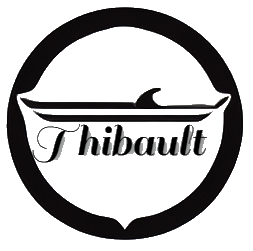

<ion-header [translucent]="true" no-border>
  <ion-toolbar>
    
    <ion-title>
      Le bateau de Thibault
    </ion-title>
    <ion-buttons slot="end">
      <ion-button (click)="goToCartPage()">
        <ion-icon name="cart"></ion-icon>
      </ion-button>
    </ion-buttons>
  </ion-toolbar>
</ion-header>
